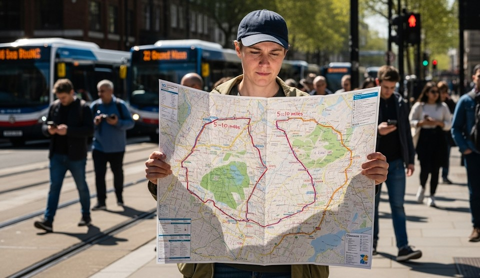

Handling Public Transportation Shutdowns
Objective
Get home or to a safe location when transit stops unexpectedly.
Pre‑Plan
- Map a 5–10 mile walking route with two alternates.
- Cache water/snacks at work; keep walking shoes and socks there.
When It Happens
- Avoid bottlenecks at closed stations; walk to surface routes.
- Form a small group; set a pace and rest schedule.
Safety
- Cross at lights; avoid highways and dark underpasses.
- Carry ID, cash, and a contact card.
Real Example
Office group walked a riverside greenway to a rideshare perimeter two miles out and carpooled home.
Checklist
- Comfortable shoes, socks
- Water bottle, snack
- Paper map
Contingencies
- Nightfall → stop at a safe lobby; resume at first light.
- Injury → slow pace, adjust route to lit streets.
After‑Action
Update your alternates after each shutdown experience.
← Previous | All Articles | Next →